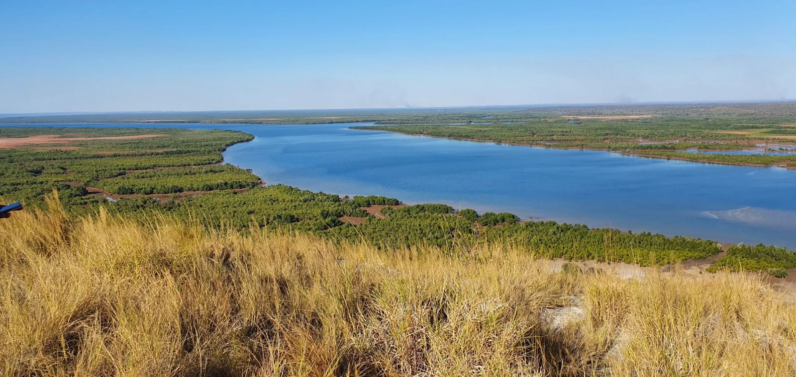
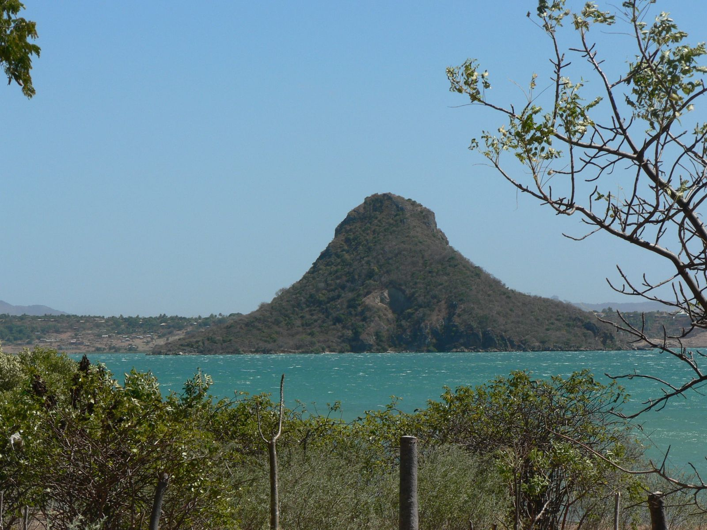
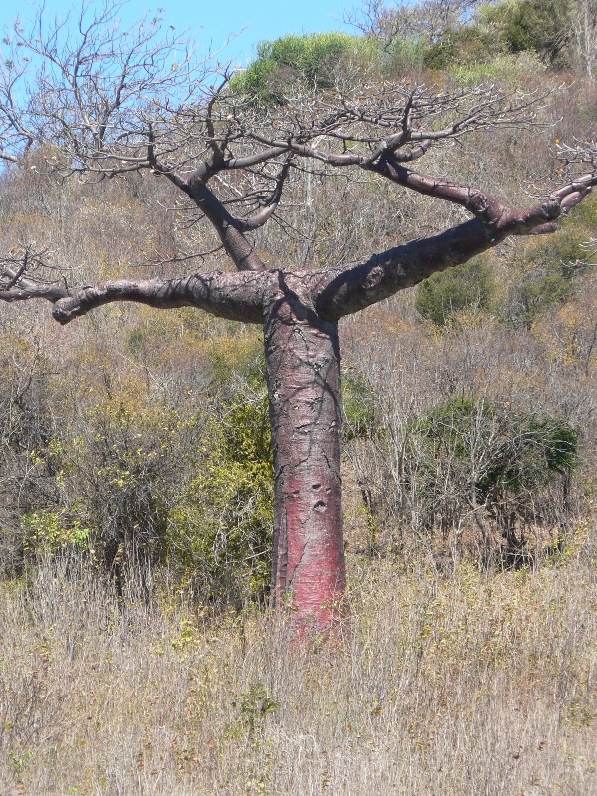
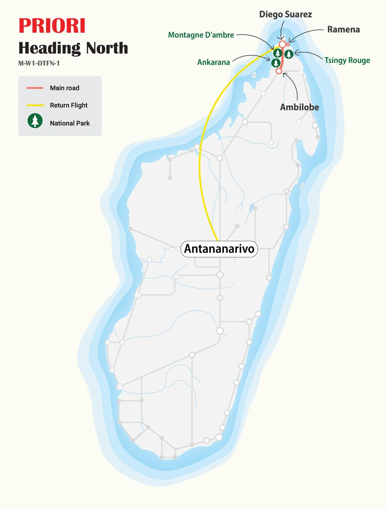

html
Discovering the Far North, MG106, Madagascar
MG106 · Discovery Circuit
Discovering the Far North
From amber-tinged rainforest to white-sand shores, a journey through the many faces of Madagascar's northern tip.

The far north of Madagascar is a place of contrasts: cool mist-laden rainforest gives way to eroded red spires, which in turn yield to limestone needle-fields and finally to pirate-haunted white beaches lapped by the Indian Ocean. This circuit takes in all of it.
At a Glance
The Essentials
Itinerary Antananarivo → Diégo-Suarez → Montagne d'Ambre → Tsingy Rouge → Ankarana Reserve → Ramena Beach → Diégo-Suarez → Antananarivo
Nature, culture and beach, three very different moods woven into a single journey through Madagascar's most diverse region.

Not to Miss
Circuit Highlights
- Montagne d'Ambre National Park. A cool, mist-wrapped rainforest at the very tip of the island, home to lemurs, reptiles and cascading waterfalls hidden among deep-green endemic vegetation.
- Tsingy Rouge. Strange, spectacularly eroded formations of red sandstone and laterite, a landscape unlike anything else on Earth, sculpted by centuries of rain and wind.
- Ankarana Special Reserve. Two full days among 20-metre limestone needles, ancient baobabs, dry and tropical forests, caves and gorges, all accessible via a dramatic suspension bridge.
- Ramena Beach & the Bay of Diégo. Fine white sand, three sheltered bays, pirogue excursions, fresh seafood, and the legendary silhouette of Sugar Loaf Island on the horizon.

Day by Day
Full Itinerary
- Day 1 Flight from Switzerland Arrival at Antananarivo airport late in the evening. A driver meets you on arrival, assists with luggage and transfers you to your hotel near the airport.
- Day 2 Antananarivo → Diégo-Suarez Off to the far north. A short flight brings you to the tropical coastal city of Diégo-Suarez. The day is yours, time to slow down, find your rhythm, and wander the wide streets lined with old colonial houses and sweeping sea views.
- Day 3 Diégo-Suarez → Montagne d'Ambre Into the rainforest. The Montagne d'Ambre National Park sits under its own microclimate, agreeably cool and perpetually lush. A dense humid forest of deep greens awaits, full of endemic plants, lianas and towering trees. Lemurs and reptiles reveal themselves along the trail to a set of beautiful waterfalls.
- Day 4 Montagne d'Ambre → Tsingy Rouge → Ankarana Leaving the cool forest behind, the route heads south through villages, rice paddies, palm groves and open countryside. A stop at the Tsingy Rouge reveals eerie, sculpted towers of red sandstone and laterite, strange, striking, and unlike anywhere else. By evening, you reach the entrance of the Ankarana National Park.
- Day 5–6 Ankarana Special Reserve Two full days in one of Madagascar's most varied protected areas. Dry forest, dense tropical forest, caves and chasms invite long hikes. Lemurs, chameleons and a rich birdlife are a constant presence, as are ancient baobabs and other endemic species found nowhere else on Earth. The defining moment: the Tsingy d'Ankarana themselves, a field of razor-edged limestone needles rising up to 20 metres. A suspension bridge offers the full panorama of this extraordinary natural theatre.
- Day 7 Ankarana → Ramena Beach / Diégo-Suarez The road north winds through cocoa, vanilla and spice plantations, the air itself feels like an invitation to linger. After the famous bay of Diégo and its Sugar Loaf Island silhouette, you arrive at Ramena Beach for two nights. Three hundred years ago, pirates declared their own free republic here, the legendary Libertalia.
- Day 8 Ramena Beach, Free Day A full day of rest and exploration on three bays of white sand. Take a pirogue out onto the water, have lunch at a beachside fish restaurant, admire the coastline from the eastern headland, or simply stretch out and do nothing at all. The choice is yours.
- Day 9 Ramena → Diégo-Suarez → Antananarivo Back to Diégo by road, with a little time for last-minute shopping among the city's spice and craft stalls. Then a farewell to Madagascar's northern tip before the flight south to the capital, where the highland air and urban bustle arrive as a gentle reminder that the journey is almost over.
- Day 10 Antananarivo, Free Day Madagascar has taught you to be flexible, a useful skill for exploring the capital on your own terms. Wander a craft market or a local vegetable souk, climb to the old Royal Palace of Rova and look out over the city's winding streets and stacked rooftops. The evening flight departs late.
- Day 11 Return Flight The plane lifts off after midnight. Veloma Madagasikara , farewell, Madagascar.

PRIORI M-W1-DTFN-1